Vite builds with no chunk warning. The largest JS chunk is Mermaid at 491.12 kB minified / 136.65 kB gzip.
Static visual decision board
Stabilize the site before making it beautiful.
This board translates the `ideal-web-app-builder` handoff into a static HTML review artifact. The stabilization, token/performance, MCP proof-route, Swiss-modern grid-layer, MCP a11y/Storybook gate, and public shell route-matrix slices are now executed; the board remains the visual checkpoint for the next route-internal, content, and product-readiness decisions.
Current Truth
Stabilization, token layering, route chunking, the MCP proof route, the first Swiss-modern grid layer, the MCP a11y/Storybook proof gates, and the shared public shell are complete for their first slices. This is still not a finished ideal web app: manual screen-reader/reduced-motion evidence, complete route-composite Storybook matrices, route metadata, PWA posture, legal pages, observability, and deeper diagram-payload decisions still need explicit work.
The focused design-system contract passes at 13/13, and the full Vitest suite passes at 76/76.
Generated Storybook output is ignored, and the real source ESLint gate is green.
Build succeeds with the a11y addon running through WCAG AAA; the iframe chunk is 1.09 MB.
Playwright plus axe reports 0 violations, keyboard roving tabs, visible focus, and no horizontal overflow.
Home, docs, MCP, and blog pass desktop/mobile shell structure, skip-link focus, axe AAA, and overflow checks.
Screenshot Baseline
These are not target designs. They are the current visible truth that later changes must improve without hiding regressions.
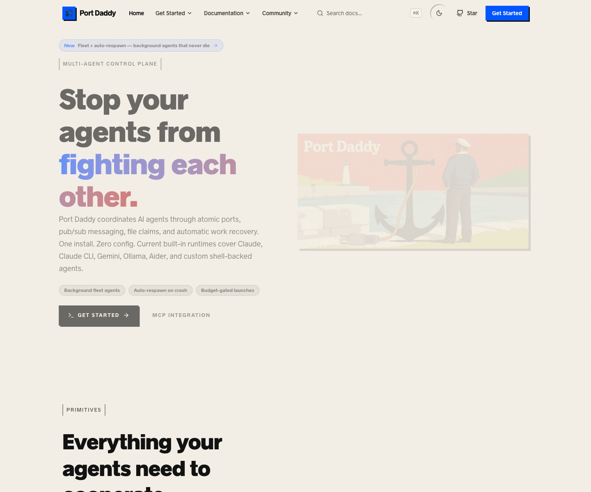
Coherent route capture. Heavy type works better here than on desktop, but secondary action hierarchy is weak.
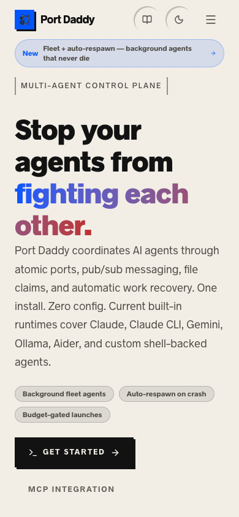
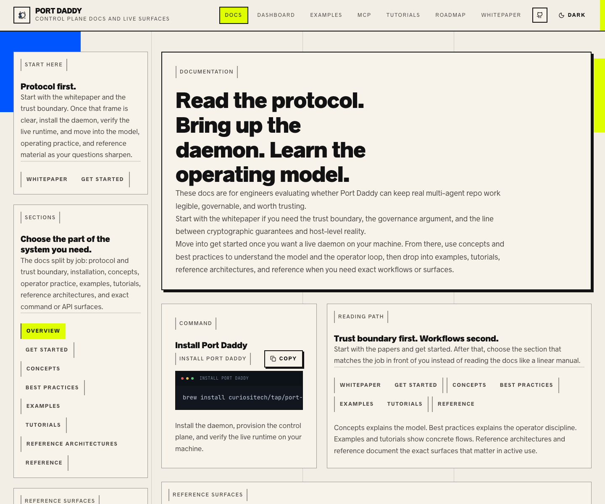
The docs shell carries the clearest design language. It needs shared navigation and component-state discipline.
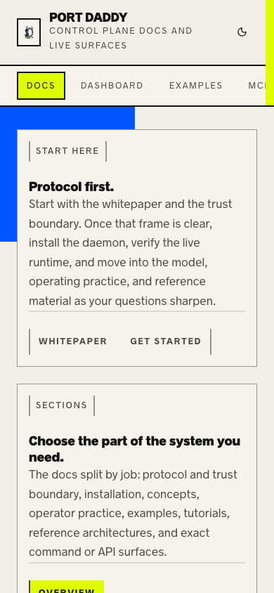
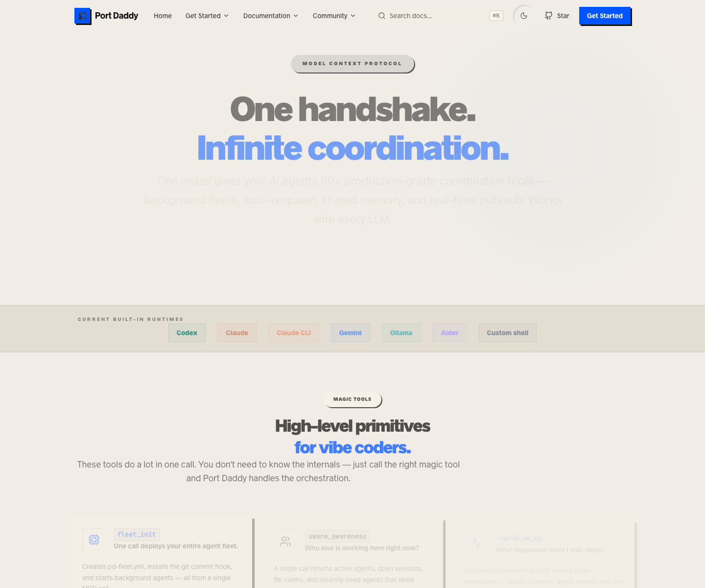
The original hero paragraph nearly disappeared on mobile. It remains here as baseline evidence for the proof-route change.
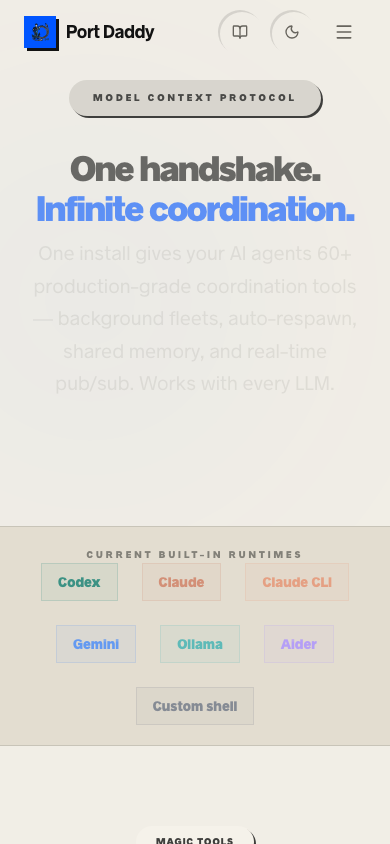
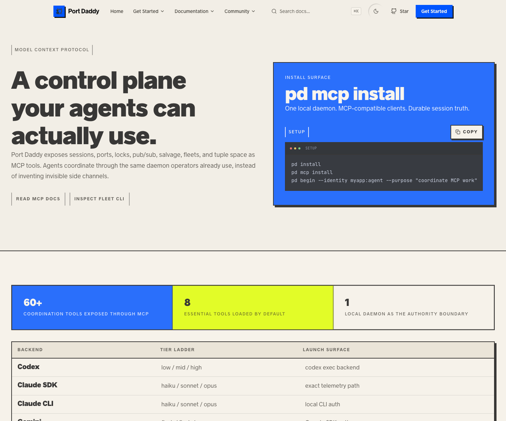
The rebuilt route wraps mobile copy and keeps wide terminal content inside the code block instead of widening the page.
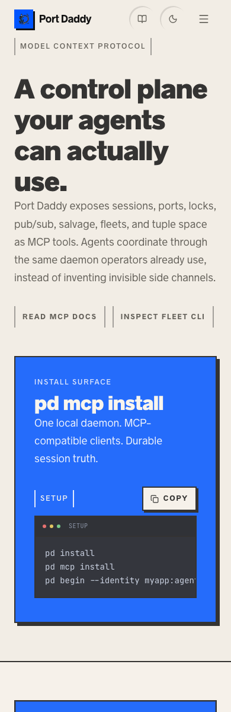
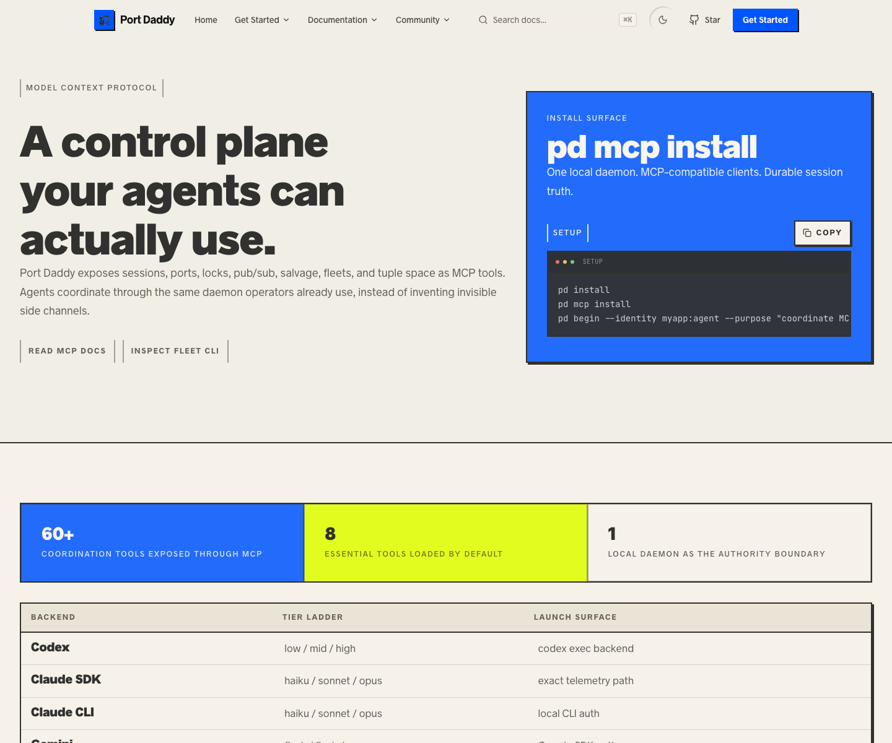
The Swiss layer preserves mobile readability while the desktop layout moves to a stricter editorial grid and flatter surfaces.
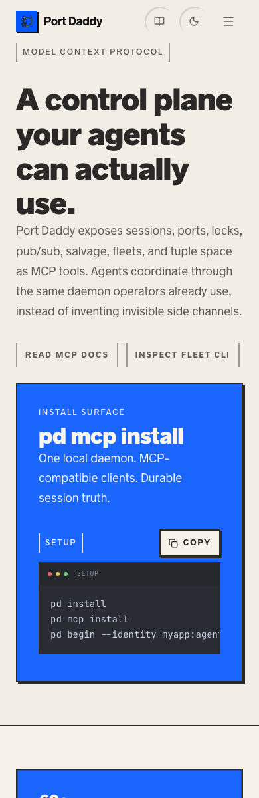
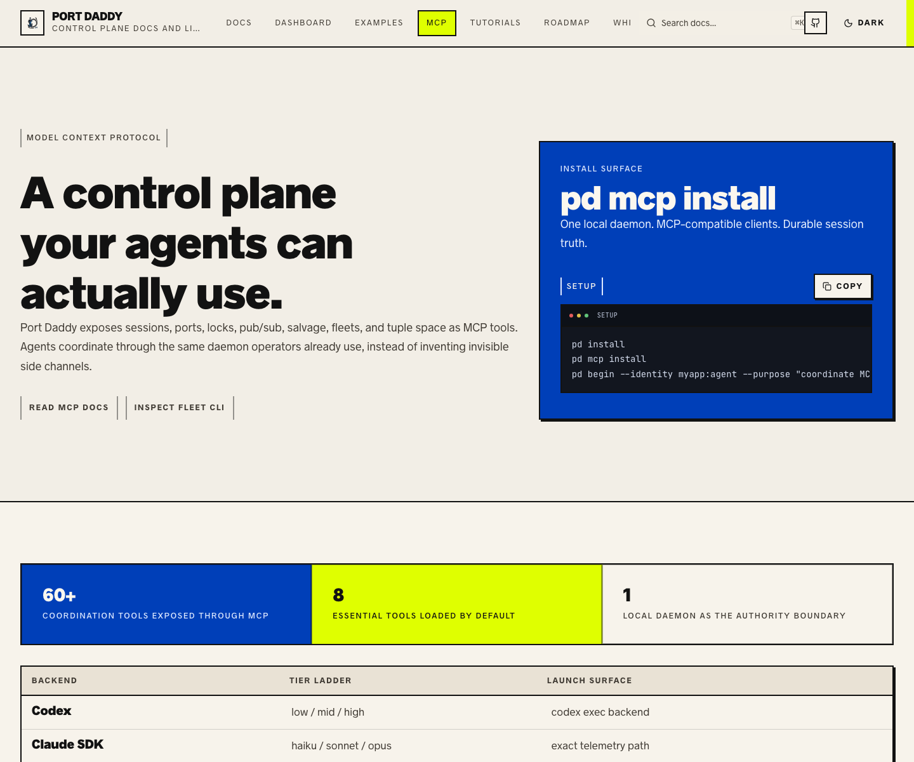
The a11y gate checks mobile overflow, axe violations, roving tabs, Home/End navigation, and visible focus instead of only relying on screenshots.
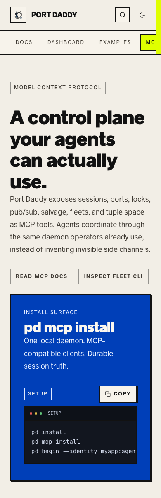
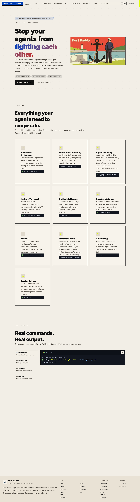
The terminal demo tab rail and code panel now stay inside the mobile viewport while preserving horizontal code scroll.
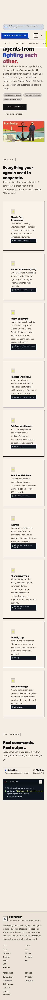
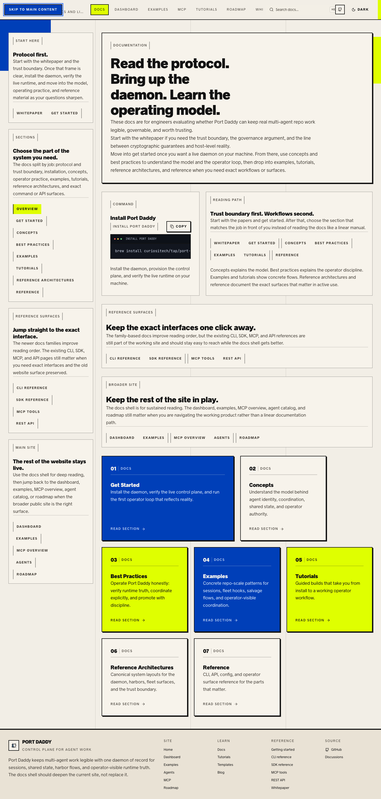
Shared docs cards no longer depend on opacity-dimmed eyebrow text for hierarchy.
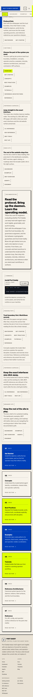
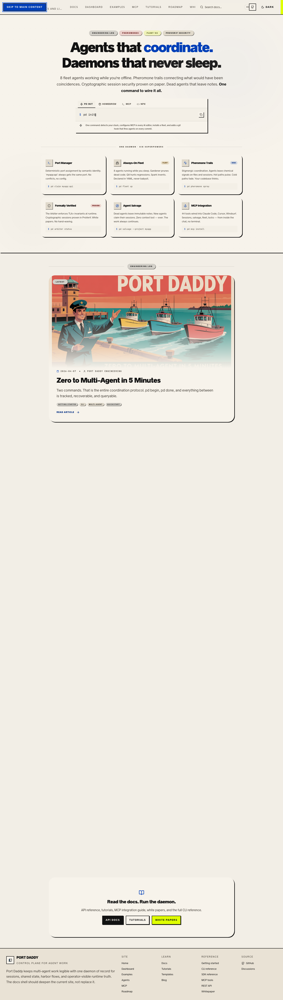
Blog badges and small action text now use high-contrast on-tint tokens instead of literal or low-contrast colors.
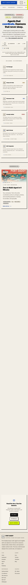
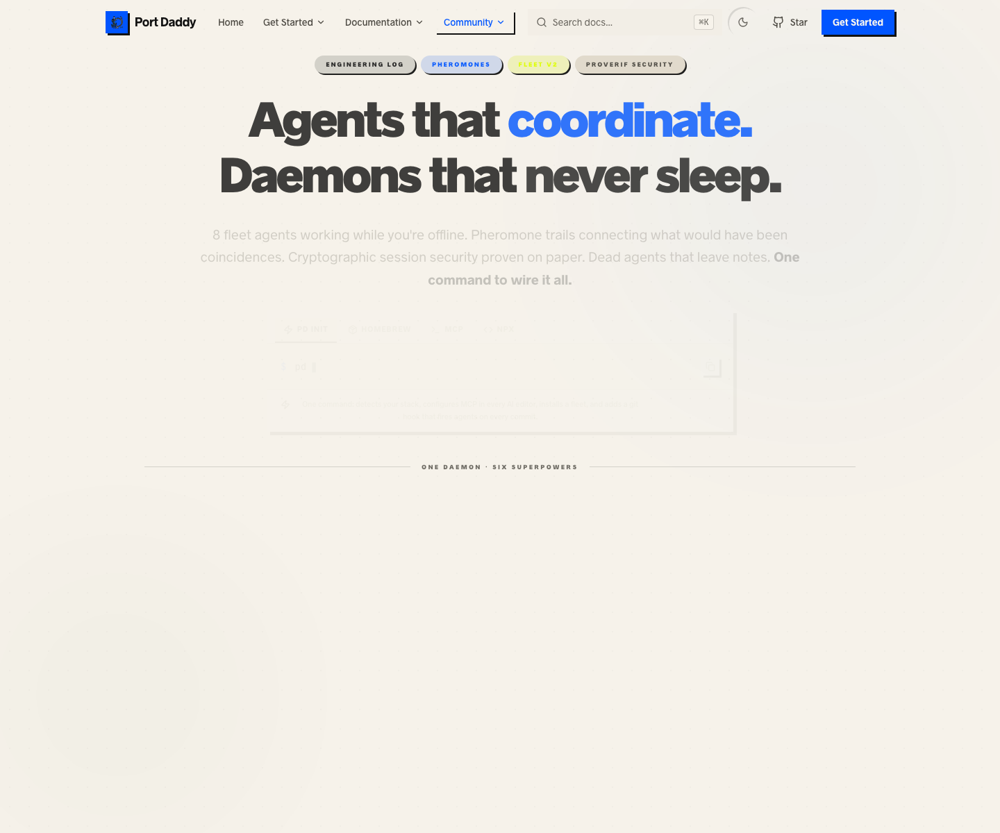
Content depth exists, but metadata, cards, visual hierarchy, and route-level SEO need system work.
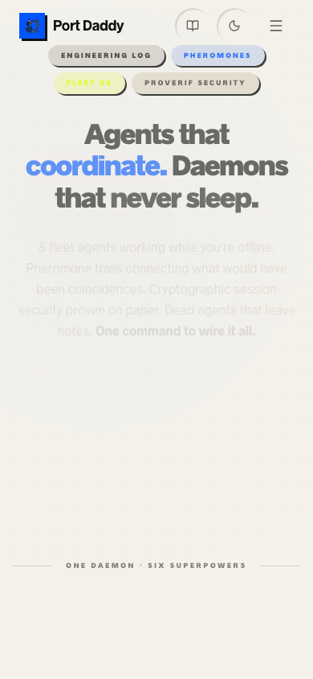
Recommended direction
Signal-grade infrastructure editorial.
Preserve the distinct paper, ink, blue, and lime identity, but make it stricter, more legible, and more operational. The target is serious local infrastructure with enough editorial edge to be memorable.
Design family
- Use TypeUI-style `Refined` for typography discipline.
- Use `Paper` for docs tactility and artifact credibility.
- Use `Perspective` for diagrams and system explanation.
- Use Swiss-modern structure for grids, measure, rhythm, and restraint.
- Keep only a measured amount of neobrutalist pressure.
Approval Decisions
These decisions were approved for the first stabilization slice on 2026-04-26. They still govern future broad token, route, layout, and content rewrites.
| Decision | Recommended choice | Alternative | Why it matters |
|---|---|---|---|
| Brand register | Signal-grade infrastructure editorial | Full poster style, generic SaaS, mascot-forward maritime | Controls type, density, imagery, and content voice. |
| Shape system | Mostly square protocol panels with a small integral radius ladder | Zero radius everywhere or large pill/blob radii | The current route mix is visibly inconsistent. |
| Typography | One high-quality sans/display family plus technical mono | Keep `font-black` everywhere or buy a distinctive face immediately | Typography is the fastest path to making the site feel intentional. |
| Color system | Source palette in token files only, semantic and role tokens everywhere else | Keep arbitrary page-level colors | Required for WCAG, dark mode, and maintainability. |
| Grid system | Shared 12-column Swiss editorial grid primitive for new proof slices | Keep local grid math inside each page | Prevents arbitrary widths from rebuilding visual drift route by route. |
| Route strategy | Preserve the broad current route surface and normalize in slices | Replace with a tiny site or delete old pages | Current recovery notes warn against another replacement reset. |
| First proof route | Rebuild `/mcp` first after baseline stabilization; first proof route complete | Defer MCP and polish home first | MCP has visible mobile contrast failure and high drift. |
| PWA posture | Add manifest and favicons, decide offline scope after content audit | Skip PWA entirely | Installability may fit a docs/tool site, but stale offline docs are risky. |
| Observability | Privacy-first Sentry and Web Vitals behind env and consent policy | No browser telemetry | A polished production site needs real error and performance evidence. |
First Execution Slice
This is the pessimistic order. It prevents the site from getting prettier while remaining broken.
Approve or revise this board.
Status: approved for the first stabilization slice. Future broad visual changes still need slice-level evidence.
Repair baseline truth.
Status: complete. Tutorial truth, lint scope, lint blockers, full tests, and build are green.
Split the token layers.
Status: complete for the active entrypoint. Source tokens, semantic aliases, role tokens, and compatibility aliases are in place.
Normalize primitives and stories.
Status: in progress. Public primitives and code blocks gained shrink-safe mobile behavior; SwissGrid exists; Button, Badge, Surface, CodeBlock, public primitives, and SiteHeader state matrices are now gated; route composites still need work.
Layer in Swiss-modern structure.
Status: complete for the first proof slice. Source and role tokens now include grid and measure roles, shadows are flatter, and `/mcp` uses the shared 12-column grid.
Rebuild `/mcp` as the proof slice.
Status: complete for the first proof route. The route uses approved primitives/tokens, has desktop/mobile screenshots, passes axe and keyboard checks, and is covered by Storybook plus contract gates.
Unify the public shell.
Status: complete for the shell slice. Home, docs, MCP, and blog now share the same header/footer shell and pass the desktop/mobile shell a11y route matrix.
Do not claim done
- The website is not product-ready just because tests and lint are green.
- The design system is not ideal until all page slices migrate to shared grid/measure primitives and state matrices exist.
- Accessibility is not acceptable until axe, keyboard, focus, reduced-motion, and screen-reader evidence exists.
- Performance is improved, not done, while Mermaid and diagram payload decisions remain.
Source of truth
This HTML is a static review view. The canonical plan remains
docs/plans/port-daddy-website-ideal-web-app-rehab.md.
Update both if the user approves a different direction.